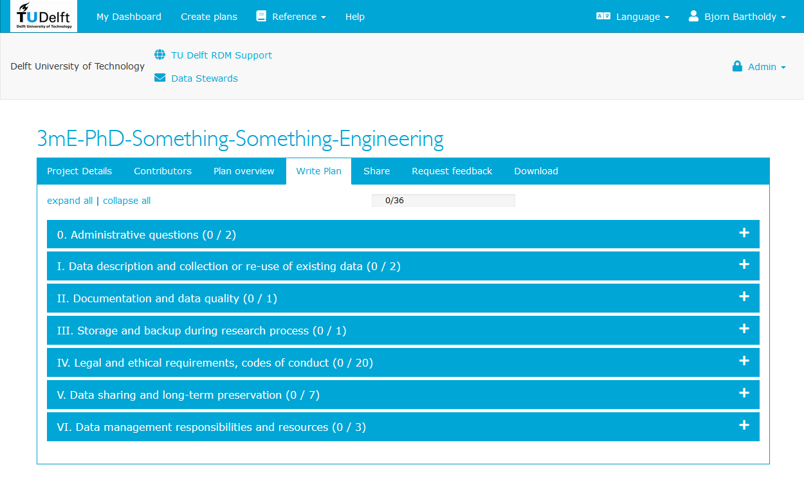

Part 1
Content
Part 1 consists of a presentation on research data management as well as hands-on experience developing a data management plan with DMPonline.
- Intro to research data management (1h)
- policy requirements
- processing personal data
- Hands-on experience with DMPonline
- No personal research data (1.5h)
- Personal research data (2h)
Brightspace module under construction.
Link to presentation.
DMPonline
The DMPonline service is hosted at the University of Edinburgh by the Digital Curation Centre. The data management plans are stored at servers of the University of Edinburgh, UK. In order to help identify and administer your account with DMPonline, they store your name and email address. They do not sell, rent or trade any personal information you provide. The information you enter into this system can be seen by you, people you have chosen to share access with, and - for the purposes of providing DMP support - service administrators at TU Delft.
Step 1 - Login
Go to https://dmponline.tudelft.nl
If you have not created an account yet, go to ‘Create account’.
If you have already created an account, Go to ‘Sign in’.

Fill in the short form consisting of your name, email address (preferably your TU Delft email address), organisation (type Delft and “Delft University of Technology” will appear. Click on this.), and create a password.

Next time you log on, you can go to ‘Sign in with your institutional credentials’.
Click on ‘Sign in with your institutional credentials’.

Select Delft University of Technology from the institutional login page.

Log in with your NetID
Step 2 - Create a plan
Click on the ‘Create plans’ tab and fill in the following:
What research project are you planning? > Prefix your project name with ‘3mE-PhD’ (e.g. 3mE-PhD-Something-Something-Engineering)
Select the primary research organisation > Delft University of Technology
Select the primary funding organisation > No funder associated with this plan or my funder is not listed.
You need to select ‘No funder’ to be able to access TU Delft Data management Plan template (2021) that is used in this training.

Select the TU Delft Data management Plan template (2021) and click ‘Create Plan’
Step 3 - Writing the plan
Go to Project Details: Please fill in the funder. A short abstract is handy if you would like me to review your plan. Here you can also change the project title if necessary. The remaining questions are optional. Make sure to click on ‘save’.
Fill out your information in the Contributors tab and add the ‘Principal Investigator’ checkbox.
Go to Write Plan: This is an interactive Data Management Plan template.
Based on the answers you provide, some of the questions will get removed. Therefore it is important to answer the questions in this template in the order they are listed.
Answer questions 1 - 6 (sections 0 - III).
Q1 as ‘This DMP is created during the Data Management Plan Training for 3mE PhD students delivered by my faculty data steward Yasemin Turkyilmaz - van der Velden’ and Q2 as the date of the training.

Please feel free to make use of the example answers provided under the questions and consult the guidance provided at the right side of each question. Just make sure you understand the example answer before you copy-paste.
Step 4
Continue with answering question 7 in the section ‘IV. Legal and ethical requirements, codes of conduct’. If you will not work with personal data, after answering questions 7 - 9 in the section ‘Legal and ethical requirements, codes of conduct’, you can continue with question 26 in the section ‘Data sharing and long-term preservation’. The remaining questions (Questions 10 - 25) in the section ‘Legal and ethical requirements’ are only applicable if you will process personal data. Questions about these (Questions 10 - 25) will be addressed during the section 16.00 - 16.30 (personal data).
Step 5
It is the responsibility of the PhD supervisor(s) to review and approve the DMP and the Data Steward can be consulted if desired. To share the DMP with your supervisor(s), go to the Share tab and invite them as a collaborator. You can choose to give various permissions (co-owner, editor, read only) to your collaborators. On this tab, you can also determine the visibility (private, organisation, public) of your plan. It is set as private by default. If you would like me to give feedback on your plan, go to the Request feedback tab and click on ‘Request feedback’. Once your DMP is complete, go to the Download tab and download it in the format you wish. If you would like the information in ‘Project Details’ to be included, make sure to select ‘project details coversheet’.
If you ask me to review your DMP after this training, then you can update your answer to Q1 by making use of the TU Delft example answer and Q2 with the date of the review.